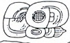
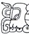
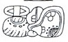
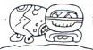

| A1 | Distance Number: 8 K'ins, 4 Winals (should be 9 K'ins) | |
| B1 | Calendar Round: 6 Ahaw 13 Mak | |
| A2 | ????? 5 tun | |
| B2 |  | i u-ti "and then it happened" |
| C1 | Calendar Round: [4] Muluk 2 K'umk'u |
| D1a | KIMI-mi "He died" | |
| D1b | ???? | |
| C2a |  | K'awiil |
| C2b | Mutul Ahaw "Lord of Mutul" | |
| D2 | u-ti-ya SAK'-HA-la "it happened at the White Water/Plaza" | |
| E1 |  | ta-ba chuk'/kuch? "he was rope-captured(?)" |
| F1a | ah... Tun? "he of the ... stone" | |
| F1b | u KAB-hi "he caused it to be done" | |
| E2 |  | B'alah Chan |
| F2a | K'awiil | |
| F2b | K'uhul Mutul Ahaw "Holy Lord of Mutul" |